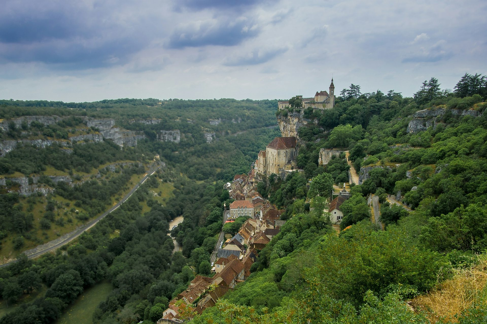

Le Lot, entre gouffres, causses et villages perchés
Une rivière souterraine à 103 mètres sous terre, une cité sacrée accrochée à sa falaise et des villages de pierre perchés au-dessus du Lot.
Photo : Joran Quinten / Unsplash
Au sud de la Dordogne, le département du Lot réunit quelques-uns des sites les plus visités du Sud-Ouest : le gouffre de Padirac et Rocamadour, à moins d’une demi-heure l’un de l’autre, puis Saint-Cirq-Lapopie, au-dessus de la vallée du Lot, près de Cahors.
Le Lot se combine facilement avec un séjour dans le Périgord : Rocamadour est à environ une heure de Sarlat. La voiture reste le moyen le plus pratique pour circuler entre les sites. Chaque guide vous dit quoi voir, comment y aller et quoi réserver.